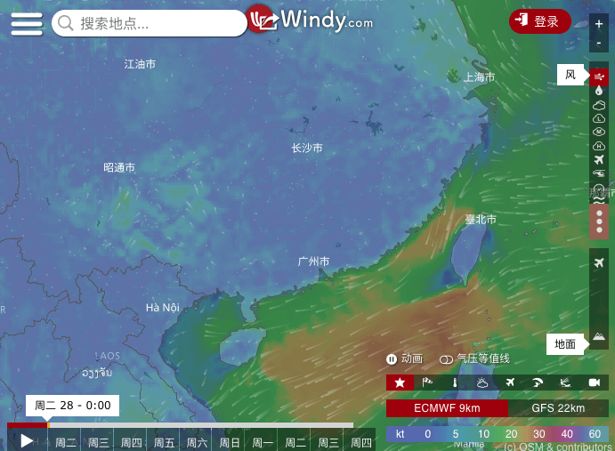
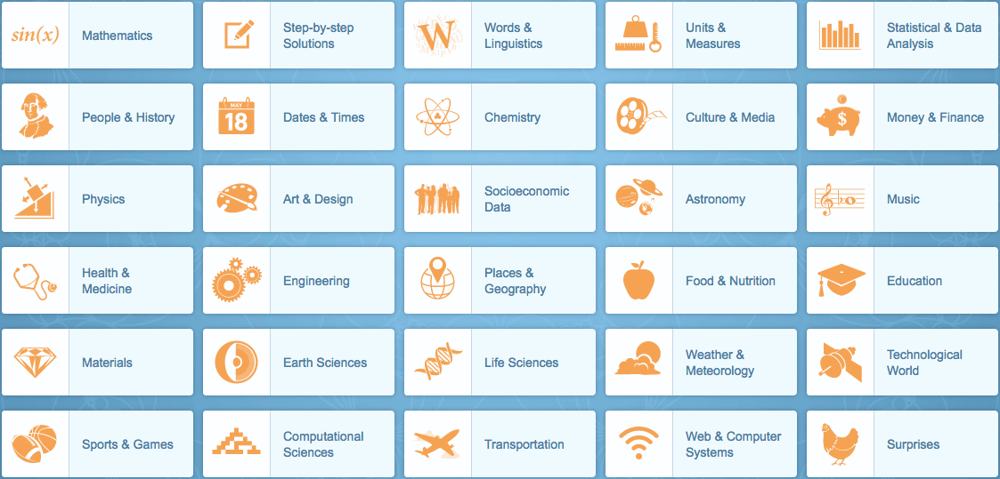
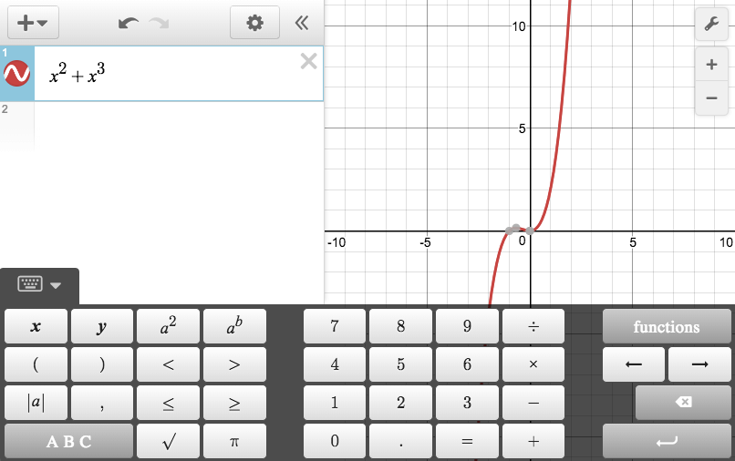
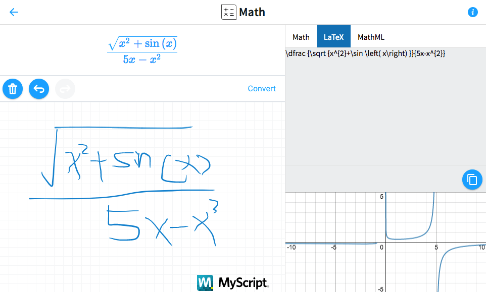
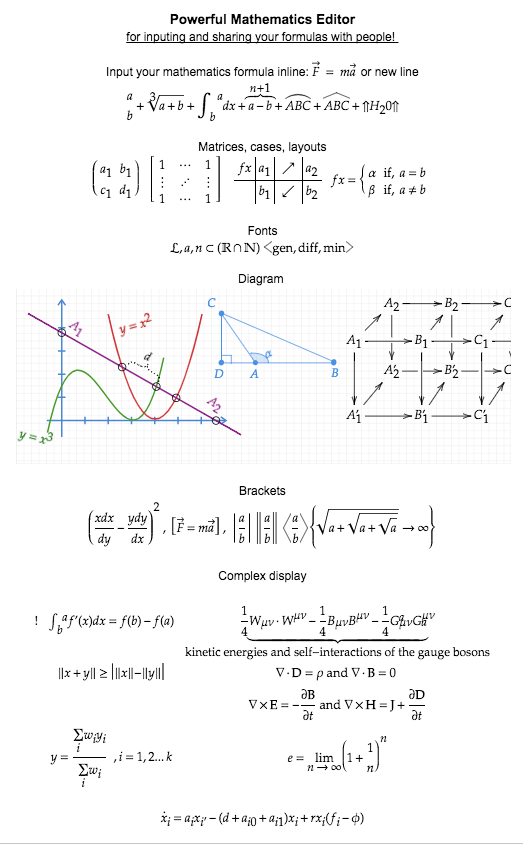
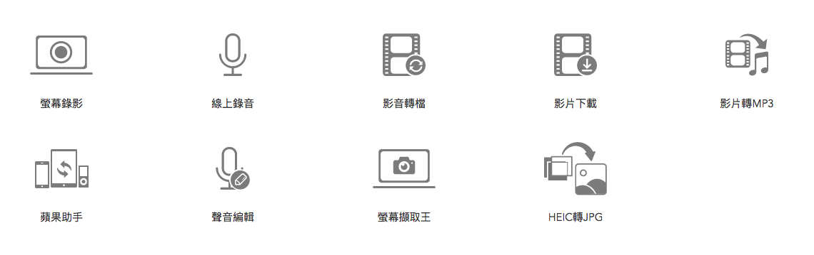
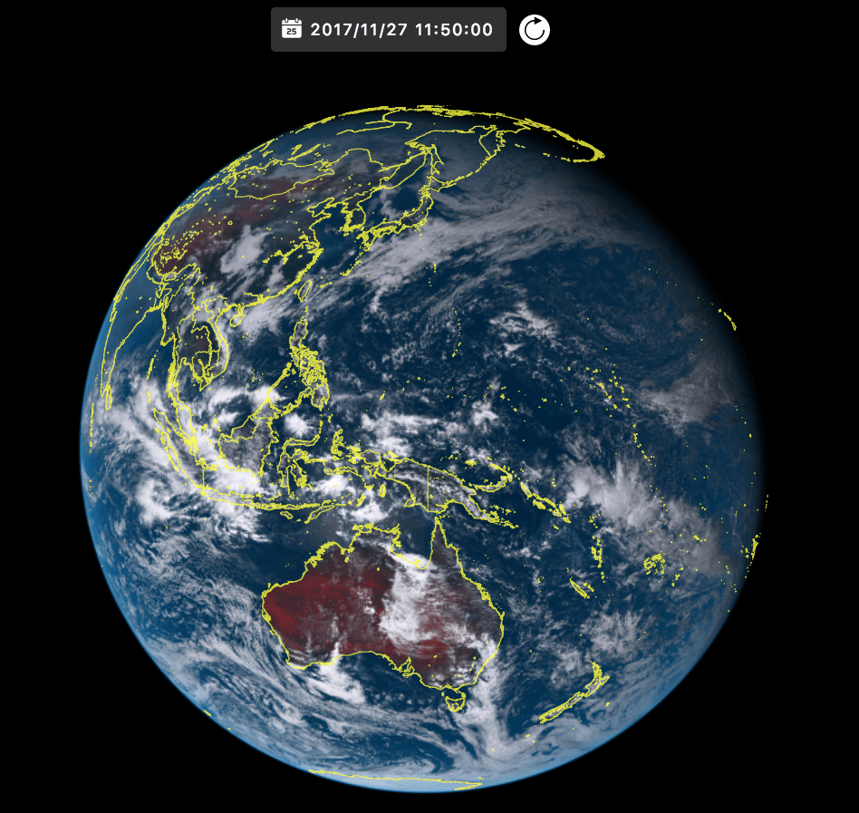
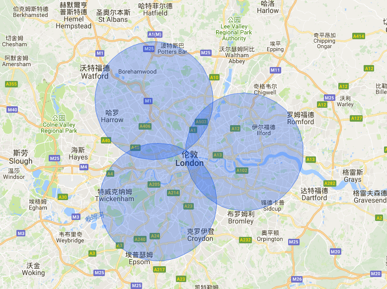
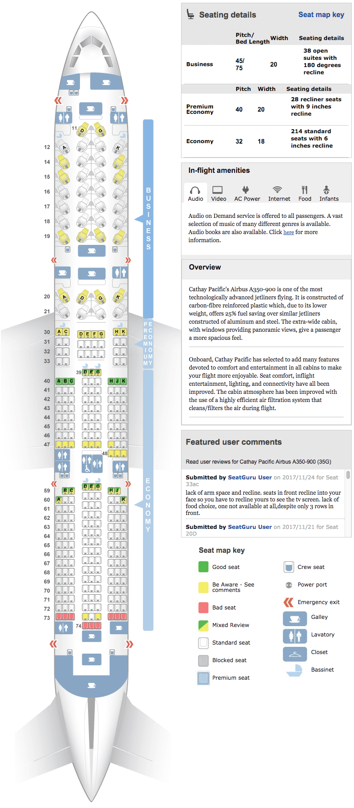

办公相关
Smallpdf
这个网站号称是「所有PDF问题的免费解决方案」
网址: https://smallpdf.com/依奇在线超级转换工具
文字在线识别工具 - 可保留原始格式，提供图像文字识别，pdf文字识别服务。
网址: http://ocr.wdku.net/石墨
可多人实时协作的云端文档与表格。
网址: https://shimo.im/熊[x]猫[x]翻[x]滚
撑fan杆qiang跳
网址: https://ezssl.net
没有找不到的资源！
百度网盘搜索
Rarbg
基本上所有新出的剧和电影的磁力链接、BT种子第一时间都能在这找到，请配合下面几个字幕网站食用。
网址:https://rarbg.is/torrents.phpBTDB
下载磁力链接、BT种子的网站
网址:http://btdb.toTorrentz2
下载磁力链接、BT种子的网站
网址:https://torrentz2.eu/Sub HD
字幕网
网址: http://subhd.com/字幕库
字幕网
网址: http://www.zimuku.cn/伪射手网
字幕网
网址: http://assrt.net/电影天堂
下载电影的，提供FTP和磁力链接两种下载方式
网址：http://www.dygod.net/Torrent2Magnet
BT种子 与 磁力链接相互转换
网址: https://wuhaoworld.github.io/torrent2magnet/ClipConverter
下载 Youtube 上的视频
网址: http://www.clipconverter.cc/All IT eBooks
IT类免费书籍下载
网址: http://www.allitebooks.com/
论文、学习相关
上海科技创新资源数据中心
注册后可以免费下载知网，万方等平台的论文
网址: http://www.sstir.cn/Sci-Hub
外文论文免费下载
网址: http://sci-hub.bzGoogle 镜像导航
免撑杆跳直接使用 Google 和 Google Scholar
网址: http://ac.scmor.com/Linggle
查找英文常用语及搭配词，好用！
网址: http://linggle.com/Quizlet
可制作单词卡、练习拼写、参与游戏、测试知识水平。
网址: https://quizlet.com/
电影相关
豆瓣电影
大家都懂
网址: https://movie.douban.com/IMDB
互联网电影数据库+评分网站。
网址: http://www.imdb.com/烂番茄
电影评分网站，左边的番茄代表专业影评人的分数，右边爆米花是一般观众评分。
网址: https://www.rottentomatoes.com/Metacritic
电影评分网站
网址: http://www.metacritic.com/Bangumi
据说是二次元的豆瓣
网址: http://bangumi.tv/猫眼专业版
提供每日电影实时票房、排片、上座率查询
网址: http://piaofang.maoyan.com/dashboardCBO中国票房
和猫眼专业版差不多
网址: http://www.cbooo.cn/
设计相关
求字体
根据上传的图片找字体，支持中英文。
网址: http://www.qiuziti.com/Clipping Magic
删除图像背景,获得透明背景。
https://zh.clippingmagic.com/Pinterest
图片收集网站
网址: https://www.pinterest.com/ProcessOn
在线创作流程图、思维导图、BPMN、UML图、UI界面原型设计、iOS界面原型设计等。
网址: http://processon.comColor Hunt
配色网站
网址: http://www.colorhunt.co/Nippon Colors
一个收录日本传统颜色的网站
http://nipponcolors.com/uiGradients
漂亮的渐变色
网址: https://uigradients.comAdobe Color CC
Adobe 出的一个色轮，可以用来查找互补色，
网址: https://color.adobe.comColor Brewer 2
图表用的配色。
网址: http://colorbrewer2.org/TinyPNG
很强大的图片压缩，在基本改变图片观看质量的情况下压缩图片，做网站的时候使用。
网址: https://tinypng.com/Compressor.io
和上面那个差不多，实测压缩率没有上面的搞，在中国大陆需要撑杆跳才能上去。
网址: https://compressor.io/compress
天气相关
AccuWeather
提供全球长达90天气的预报
网址: https://www.accuweather.com/Windy
超高颜值天气预报
网址: https://www.windy.com/
SunsetWx
全球朝霞晚霞预报网站
网址: https://sunsetwx.com/
中文说明: https://zhuanlan.zhihu.com/p/27188162
微信相关
搜狗微信平台公众号搜索
可以搜索微信公众号的内容，已经查看所有公众号最近10次发表的内容。
网址: http://weixin.sogou.com/Server酱
官方介绍是从服务器推报警和日志到手机的工具，其实是 Get 命令推送任何消息到微信。
网址: https://sc.ftqq.com/3.version微指数
微信公众号分析平台，可以查看微信公众的排名，头条阅读量，平均阅读量，平均点赞，预估的粉丝数等
网址: http://www.weizhishu.com/hotlist/account微小宝
和上面那个一样
网址: http://data.wxb.com/rank微信百宝箱
和微信相关的一堆
网址: http://wxbbx.jh1z.com/
数学相关
Wolfram Alpha
用过 Mathematica 的人应该都知道 Wolfram Alpha。
「Wolfram Alpha 可以完成数学、统计学、物理、化学、材料学、工程学、生命科学、计算机科学、测量学、经济学、社会学、语言学、天文学、地理、文学、历史、文化、体育、音乐、天气等各个领域的查询、计算和分析。Wolfram Alpha 还可对用户上传的图片进行识别。」——维基百科
网址: https://www.wolframalpha.com/
Desmos
在线画函数图像
网址: https://www.desmos.com/calculator

MyScript
将手写的公式转换成 LaTex 和 MathML 代码以及生成函数图像
网址: https://webdemo.myscript.com/views/math.html#
Latex2png
将公式转换成png图片
网址: http://latex2png.com/Mathcha
强大的数学表达式在线编辑工具，可以导出为 PDF、Latex 等格式
网址: https://www.mathcha.io/editor

计算机相关
SimilarWeb
输入域名信息即可评估相应网站的人气，并实时监控该网站的表现，还可以用来查找相似的网址。
http://www.similarweb.com/IPIP
蛮准的一个IP地址库
网址: https://www.ipip.net/SM.SM
免注册免费图床，支持外链
网址: https://sm.ms/简单图床
免注册免费图床，支持外链
网址: https://simimg.com/码农很忙免费代理IP服务器
代理服务器，爬虫用
网址: https://proxy.coderbusy.com/MSDN，让我告诉你
第三方微软产品下载地址集合，大部分Windows系列系统的镜像，提供ed2k链接
网址: https://msdn.itellyou.cn/虫数据
免费的GPU(GTX1080)主机申请
网址: http://chongdata.com/articles/?p=308
FT12
短网址
网址: http://www.ft12.com/CMD
md5加密解密
网址: http://www.cmd5.com/Objectif Securite
tool.lu
程序员的工具箱，真的…啥都有
网址: https://tool.lu/威锋iOS固件中心
用 iTunes 更新iOS设备的时候如果下载很慢，可以从这里下载，然后在 iTunes 按 shift 导入更新。
网址: http://act.feng.com/wetools/index.php?r=iosRom/indexRegEx101
在线正则表达式测试
网址: https://regex101.com/Apowersoft
在线软件，具体看图
网址: https://www.apowersoft.cn/
Cloud Convert
超强大在线格式转换，支持的格式看这里
网址: https://cloudconvert.com
浩辰云图
可以在线查看 CAD 文件
网址: http://web.gstarcad.com/
天文相关
Astronomy Picture of the Day
NASA 每天选出的一张天文图片
英文网址: https://apod.nasa.gov/apod/astropix.html
中文网址(北京天文台翻译的): http://www.bjp.org.cn/apod/today.htmlAllSkyCam
全球多个地方实时的天空照相机
网址: http://www.allskycam.com/Heavens-Above
可以查询人造天体（国际空间站、天宫一号、哈勃望远镜等）10天过境预报
网址: http://www.heavens-above.com/Himawari 8
日本气象卫星向日葵-8号，每隔10分更新一次图像。
网址: http://himawari8.nict.go.jp/zh/himawari8-image.htm

其他
gmaps-radius
Simple tool to draw circles of a given radius on top of a Google Map.
一个在 Google 地图上画出半径为某个数值的圆形，可用于三角定位。
网址: http://obeattie.github.io/gmaps-radius/
DxOMark
专业相机、镜头、手机摄影评分网站
网址: https://www.dxomark.com/
360 影视
在线电视
网址: http://360kan.wasu.cn/live/ahws/Rainy Mood
在线听下雨声
网址: http://www.rainymood.com/国家统计局
国家统计局数据可视化
http://data.stats.gov.cn/vchart.htm百度指数
可用查看对比某些关键词课搜索量
网址: http://index.baidu.com/大数据导航
SeatGuru
飞机选座不采坑
网址: https://www.seatguru.com/findseatmap/findseatmap.php
